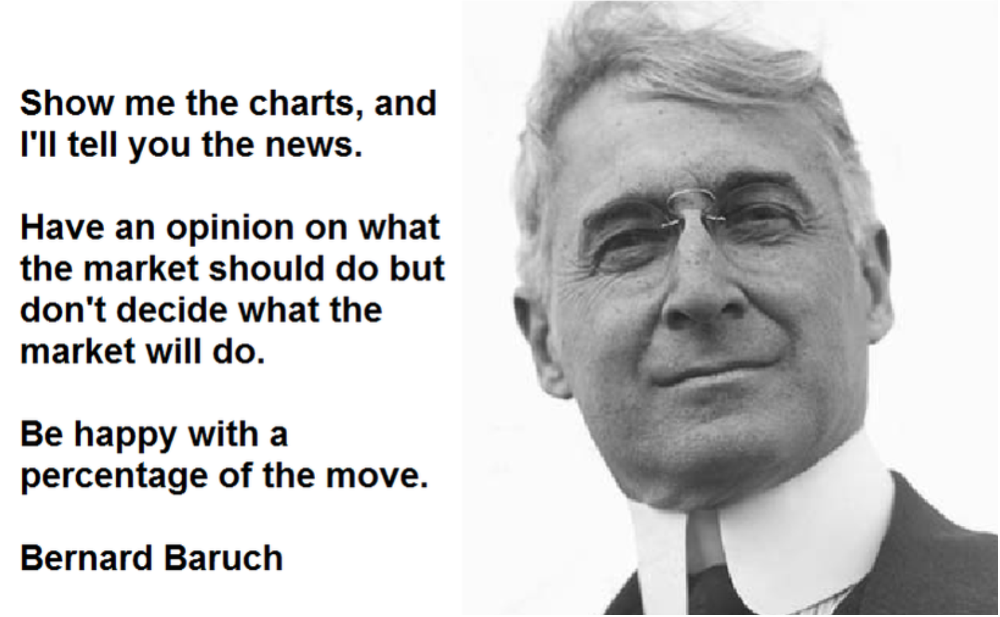
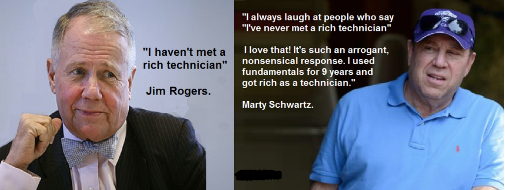
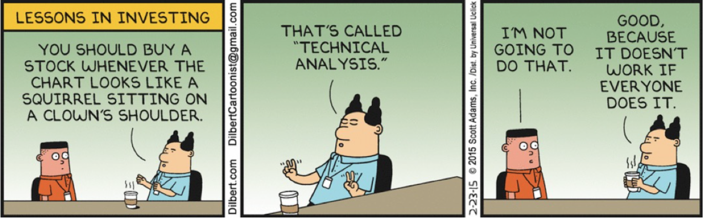
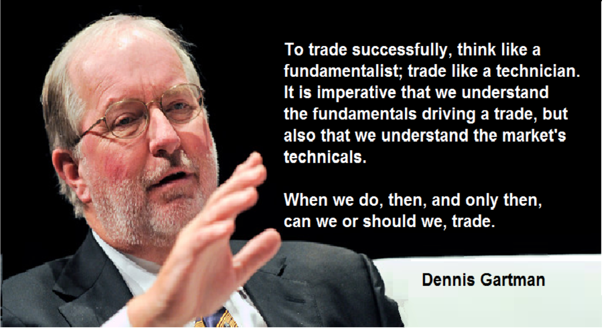
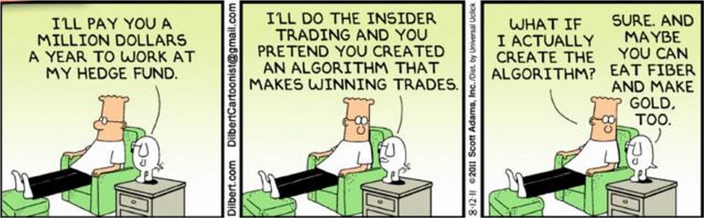

江湖上的人都说，股票分析界有两大流派。 一个叫做基本面分析派（Fundamental Analysis），一个叫做技术面分析派（Technical Analysis），这两个流派都人数众多，势力滔天，分支繁茂，却向来水火不容。
基本面的高手讲究的是全面分析上市公司各项金融会计数据量化指标（Quantitative）和质量分析（Qualitative），他们的核心理论是：市场不是有效（Not efficient）的，并不能够准确的对股票进行估价。但是技术面的高手根本对其理论不肖一顾：他们认为市场是有效的（Efficient），现在的价格包含了一切市场信息。所以技术面的人不在乎公司价值，只关心价格浮动，只研究供需关系（Supply and Demand），以此来预测未来市场走势。可以说基本面派是价值投资者而技术面派是价格投资者。
关于两派到底孰强孰弱，这向来是学术界的一大争论，吵架拌嘴乃至拉场子比划也一直没有消停过。
一般来说业界以基本面分析为多，而散户界以技术面分析为主。这主要是因为基本面分析需要大量历史数据的比较和分析，以及对整个公司，整个行业，乃至整个市场的反复研究，过程繁琐复杂，对信息质量要求很高，散户信息难以获得。而技术面分析需要数据相对基本面较少，甚至有些只是对近期价格交易量走势分析，便可以达到窥一斑而知全豹的功效。
也有少数的高手，可以将两派的精髓融会贯通，将技术和基本面的核心在交易中发挥的淋漓尽致。他们中的许多人或许白天为业界交易时用基本面分析，而晚上回到家关起门开始修炼技术分析。
当然，不管是技术面交易还是基本面交易，都抵不过神一般存在的 - - 内幕交易。此君乃是交易界的武林至尊，如能修炼到内幕交易，那技术和基本面都是浮云而已。
在此向各位爱好交易的朋友隆重推出StockMomentum 2.0版。新版本增加了Momentum Indicator 以及Momentum Measuring Bar来帮助你更好的掌握市场和个股动向。新的My Portfolio系统也将更好的收录你所关注的股票以便于你随时查看了解新的信息。StockMomentum支持NYSE/S&P 500/NASDAQ/TSX/TSX V。感谢大家的支持，如果有任何建议和意见，请联系 stockmomentum.ca@gamil.com